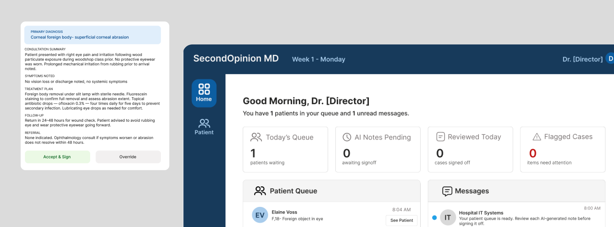
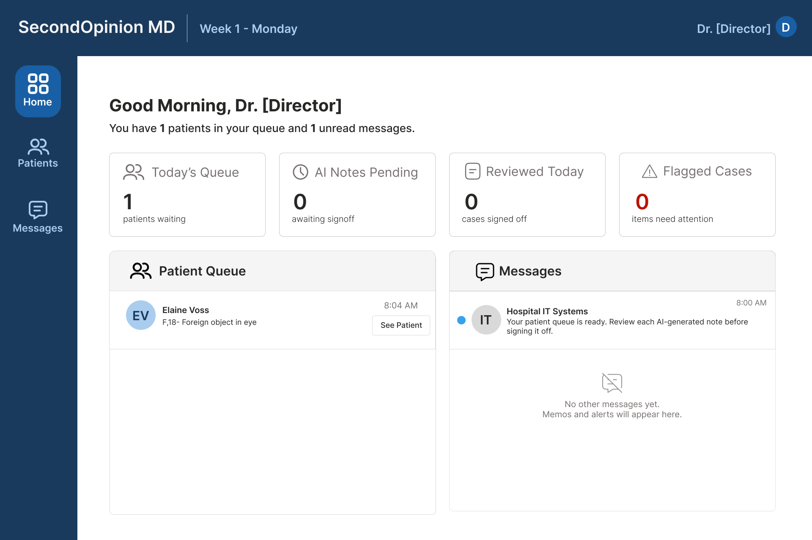
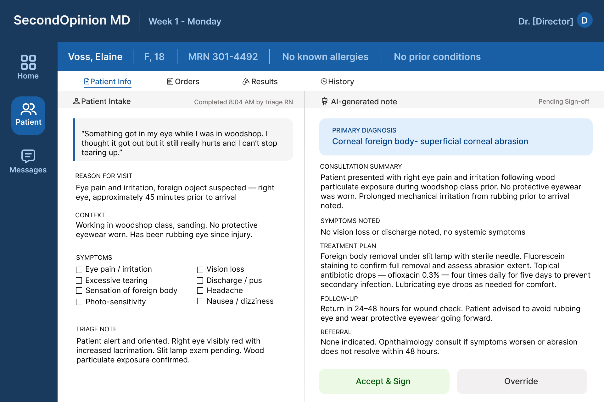

Guidelines exist for liability and compliance, but in practice, how clinicians actually integrate AI into their workflows is largely self-directed. Experienced practitioners have the instinct to catch when something is off. Less experienced ones are still building that instinct.
That gap is where Second Opinion lives.
Second Opinion is a browser-based simulation game where players take on the role of a Residency Director navigating a hospital floor increasingly dependent on AI-assisted clinical documentation. Players consult patients, review AI-generated notes, and make decisions whose consequences ripple forward through readmissions, memos, and policy changes.
It is not a training module. It is an orienting experience. The goal is one thing: make questioning what looks right a habit, not an afterthought.
We interviewed practicing clinicians about how they were actually using AI, not how they thought they should, but what was happening in their day to day practice. These were the key findings:
Clinicians described having to go back and correct audio summaries that looked right but were wrong in subtle ways. AI summarizing spoken consultations does not know which details are clinically significant and which are not.
Clinicians described working out their own approaches to using AI within HIPAA requirements, replacing patient names and details before prompting, or having families consent to their own data being used. There is no shared protocol. Everyone is figuring it out alone.
Experienced clinicians have enough pattern recognition to catch when something is off. Less experienced practitioners are still building that instinct. The risk is not AI replacing clinicians. It is AI misleading the ones who have not yet learned to question it.
Taken together, the findings pointed to a consistent pattern: AI is being used without shared protocols, it misses context in ways that are not obvious, and the practitioners most at risk are the ones still building the instincts to catch it. The problem is not awareness. It is that awareness alone does not change what happens in the moment.
Research on automation bias is consistent: awareness of a problem does not reliably change the behavior that produces it. Knowing that AI systems can be confidently wrong does not interrupt the habit of deferring to them under time pressure. Behavioral change requires practice under the conditions that trigger the behavior, not information about those conditions.
That is what simulation offers that training modules do not. A simulation does not tell you what to do. It creates the situation where you have to decide, with something at stake if you get it wrong.
The player needed to be close enough to patient care to feel consequences personally, and senior enough to feel the institutional weight of policy decisions. A Residency Director sits exactly at that intersection.
The game loop is designed so there is no obviously correct path. Every question is clinically reasonable. The tension comes from triage judgment under time pressure, not from identifying a right answer.
Players consult patients through a dialogue tree but cannot ask everything. What they learn is the only firsthand knowledge they will have before reviewing the AI's version. Choosing what to pursue under time pressure is the core skill, and there is no obviously correct path.
After the conversation, players see the AI-generated visit note alongside a confidence score. The note is usually accurate. Occasionally it contains a subtle error that only careful reading catches. Each choice has resource and time implications.
Tests consume budget. Observation beds block capacity for other patients. Unnecessary orders may trigger a Chief intervention. Every clinical decision has a cost, which is what makes the question of when to trust the AI a genuine dilemma, not an obvious one.
Every case targets a specific failure mode that AI systems actually exhibit in practice. The difficulty is not arbitrary. The error typology came directly from what clinicians told us, mapped onto the three ways AI tends to mislead rather than obviously fail.
AI gets the main diagnosis right but buries a critical risk as an afterthought. Sounds thorough. Misses what matters.
AI is not wrong. It just doesn't know what wasn't asked. The error is in what the system didn't prompt for, not what it said.
AI anchors to a plausible diagnosis and actively explains away contradicting signals. The note sounds complete and confident. It isn't.
One orienting case. One trap.
Before this case opens, a nurse note arrives in the inbox: "Mr. Smoots mentioned he hasn't had a tetanus shot in years when I was taking his vitals." The player decides when to read it. The AI note buries the tetanus risk as an afterthought. The player has to actively connect the nurse's observation to the note and order the vaccine.
AI calls bronchitis at 94% confidence. Dismisses cardiac risk because of patient age. HR 102 explained away. No nurse note. No guidance. The note sounds complete and reasonable. The player is entirely on their own. HR 102 with exertional shortness of breath in a 20-year-old warrants cardiac workup. The AI does not see it.
Real clinical accountability doesn't arrive in the moment. A patient returns days later. A memo arrives the next morning. A policy change is triggered by a pattern of decisions across cases. The consequence system was designed to mirror that timeline and to make the learning feel like something that happened to you, not something you were told.
Player accepts, edits, or overrides the AI note. Clinical resources allocated. Case signed off.
A lab result. A routine follow-up. Something that doesn't demand attention but rewards the player who notices.
Readmission alert. Memo from the Chief. An incident report. The connection to the earlier decision is traceable, but the player has to make it.
Policy changes. Audit flags. Institutional responses to patterns across cases. Decisions accumulate into a record the player has to answer for.
The Richard Radford case is the demo's clearest example. He presents with food poisoning on Day 1. AI is technically correct. A detailed player orders an ECG given his cardiac risk profile. Most don't. End of Day 2: alert fires. Radford is back in the ER with chest pain. If the ECG was ordered, it was caught early. If not, a cardiac event is developing. The gut-punch moment the demo is built toward.
The interface is designed to feel like a real hospital system, not a game. The visual language is clinical and restrained. The AI confidence score is always visible but never the loudest element on the page. The player has to choose to look at it carefully.

The queue and message panel sit side by side. Clinical cases on the left, communications on the right. The split is intentional. Critical context can arrive through either channel, and deciding when to check messages is itself a decision the player has to make.

Patient intake on the left, AI-generated note on the right. The layout does not tell the player which to trust. The confidence score is visible but not prominent. Accept and Sign sits alongside Override with equal visual weight. The interface withholds judgment on purpose.
Second Opinion is actively in development. The current build is exploring a simplified version of the case system, focused on healthcare students practicing AI trust calibration through symptom-based cases. The full consequence system and institutional layer described in this case study represent the design vision, some of which will ship in later iterations.
This project is developed in collaboration with the AI Game and Governance Lab at UC Davis. The simulation framework is being explored as a research tool for studying how clinicians make decisions when AI is involved. Insights that can help shape policy, guidelines, and future training.
A training module tells people what to do. A simulation has to create the conditions where they figure it out themselves and feel the consequences. That's a different design problem entirely, and it requires understanding the psychology of decision-making under pressure, not just the content you want to teach.
We aren't clinicians. But we talked to ones who are. Every major design decision in this project traces back to something a physician told us: the experience gap, the confident contextual errors, the absence of training. Without that foundation, the design is just speculation.
The original vision was ambitious. The build that's shipping is simpler. That's not a compromise. It is what we learned about what's actually buildable and what's most useful to the people we're designing for. Knowing when to simplify is as important as knowing what to build.
Glad we could cross paths.
I hope it left you with a bit of curiosity.